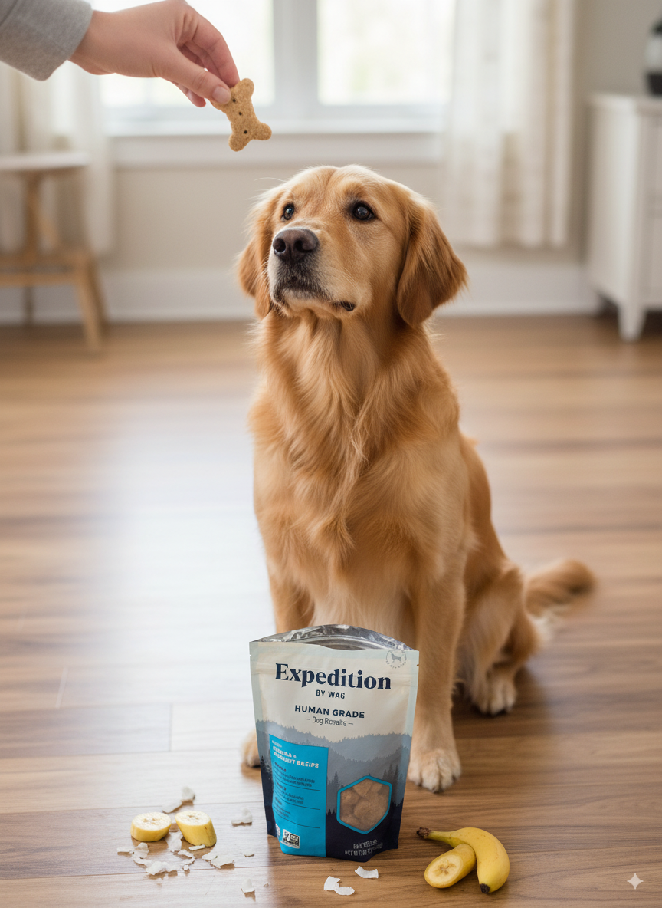

Treat Your Pet, Treat the Planet: WAG Expedition Organic Banana & Coconut Treats – A Sustainable Choice for Happy Paws
Bringing a new pet into your home is an incredibly joyous occasion, filled with excitement and the promise of unconditional love. But with that joy comes responsibility, including making thoughtful choices about your pet's food and treats. More and more pet owners are recognizing the importance of sustainability, and choosing eco-friendly options that benefit both their furry friends and the planet. This is where WAG Expedition Organic Banana & Coconut Treats come in – a delicious and responsible choice for discerning pet parents.
A Pawsitive Step Towards Sustainability
The modern pet owner is increasingly aware of their environmental footprint. We strive for eco-conscious living in all aspects of our lives, and that extends to our beloved companions. WAG Expedition understands this shift in consumer values and has created a range of treats that 🍌 these organic dog treats prioritize both pet health and planetary well-being. These aren't just treats; they're a statement of your commitment to a greener future.
Introducing WAG Expedition Organic Banana & Coconut Treats: A Closer Look
WAG Expedition Organic Banana & Coconut Treats are crafted using simple, high-quality, organic ingredients. The star ingredients, bananas and coconuts, are naturally delicious and packed with nutrients beneficial for your pet. These treats are free from artificial colors, flavors, and preservatives – a crucial aspect for pet owners concerned about the long-term health of their animals. The focus on organic ingredients ensures that no harmful pesticides or chemicals are used in the production process, minimizing the environmental impact.
Benefits That Go Beyond the Bowl
The advantages of choosing WAG Expedition Organic Banana & Coconut Treats extend beyond You can 🥥 grab these healthy treats now the immediate satisfaction of your pet. Let's explore some key benefits:
-
Organic and Natural: The use of organic bananas and coconuts ensures a wholesome and healthy treat, free from potentially harmful additives. This is particularly important for pets with sensitive stomachs or allergies. The absence of artificial ingredients contributes to a gentler digestive system and overall better health.
-
Sustainable Sourcing: WAG Expedition is committed to sustainable practices. While the exact sourcing details aren't always explicitly stated on every product, the commitment to organic certification suggests a focus on responsible farming methods that minimize environmental damage. Look for certifications like USDA Organic to verify the sustainable sourcing practices.
-
Delicious and Nutritious: These treats are not just good for the environment; they're also incredibly tasty for your pet! The combination of sweet banana and subtly sweet coconut creates an irresistible flavor profile that most dogs and cats adore. Bananas are a good source of potassium, while coconuts offer healthy fats.
-
Eco-Friendly Packaging: While specific packaging details may vary, many eco-conscious brands are increasingly using recyclable or biodegradable packaging for their products. Check the packaging for recycling symbols or information about compostability.
-
Supports Responsible Pet Ownership: Choosing WAG Expedition demonstrates your commitment to responsible pet ownership, extending beyond simply providing food and shelter. It's about making conscious choices that align with your values and contribute to a better world.
Practical Tips for Using WAG Expedition Treats
WAG Expedition Organic Banana & Coconut Treats are perfect for training, rewarding good behavior, or simply showing your pet some extra love. Remember to:
-
Introduce gradually: As with any new treat, introduce WAG Expedition treats gradually to avoid digestive upset. Start with small amounts and monitor your pet's reaction.
-
Store properly: Keep the treats in a cool, dry place to maintain freshness and prevent spoilage. Proper storage also helps to extend the shelf life of the product.
-
Supervise your pet: Always supervise your pet while they are enjoying their treats, especially if they tend to gobble their food quickly.
-
Adjust portion sizes: Remember that treats should only comprise a small percentage of your pet's daily caloric intake. Adjust the portion size according to your pet's size, activity level, and overall diet.
A Sustainable Choice for a Happy Pet
In a world increasingly focused on sustainability, choosing eco-friendly pet products is no longer a luxury; it's a responsibility. WAG Expedition Organic Banana & Coconut Treats offer a delicious and sustainable way to show your pet how much you care. By selecting these treats, you're not just providing a healthy and tasty reward; you're also contributing to a healthier planet for generations to come. Making conscious choices like this makes a difference, both for your pet and for the environment. It's a win-win for everyone involved.